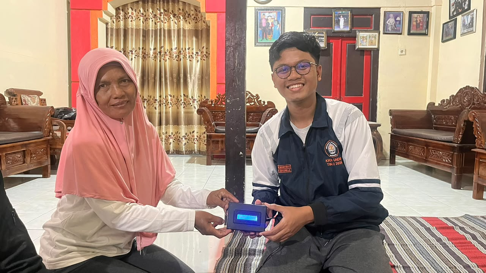
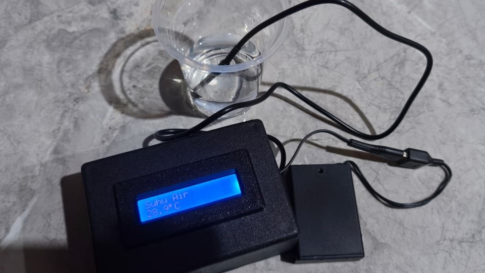
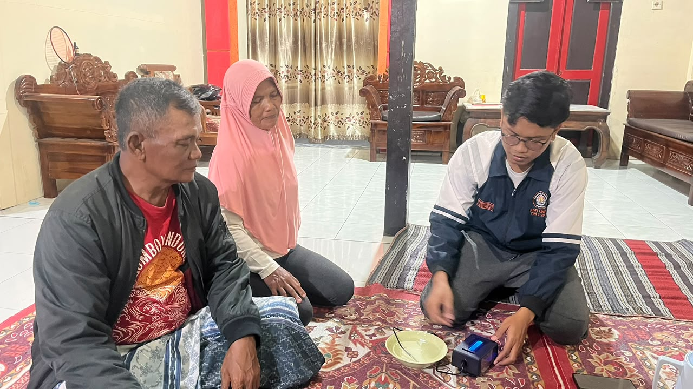

Berita Desa Sukorejo

Klaten, 13 Agustus 2026 — Mahasiswa KKN Universitas Diponegoro (UNDIP) melaksanakan program kerja “Pengembangan Sistem Monitoring Suhu Air Hidroponik” pada Sabtu (15/8/2026) di Desa Sukorejo, Kecamatan Wonosari, Kabupaten Klaten. Kegiatan ini ditujukan kepada Kelompok Wanita Tani (KWT) Desa Sukorejo sebagai upaya mendukung pemantauan kondisi suhu air dalam budidaya hidroponik.
Sistem monitoring yang dikembangkan memanfaatkan Arduino Nano dan sensor DS18B20 untuk mengukur suhu air secara langsung. Pengembangan alat dilakukan sebagai bentuk penerapan teknologi sederhana dan tepat guna yang diharapkan dapat membantu anggota KWT dalam mengetahui kondisi suhu air hidroponik dengan lebih mudah dan praktis.
Kegiatan meliputi proses perancangan, perakitan, pemasangan, dan pengujian sistem untuk memastikan alat dapat berfungsi dengan baik. Selain itu, mahasiswa KKN juga memberikan edukasi kepada perwakilan KWT mengenai cara penggunaan dan pemantauan suhu air menggunakan alat tersebut.
Penyerahan alat dilakukan secara simbolis kepada perwakilan KWT Desa Sukorejo sebagai bentuk keberlanjutan program setelah pelaksanaan KKN. Dengan adanya sistem monitoring ini, anggota KWT diharapkan dapat melakukan pemantauan suhu air secara lebih mudah sehingga dapat membantu menjaga kondisi budidaya hidroponik tetap optimal.
Melalui kegiatan ini, mahasiswa KKN UNDIP berharap pemanfaatan teknologi sederhana dapat memberikan manfaat bagi KWT Desa Sukorejo serta mendukung keberlanjutan kegiatan budidaya hidroponik. Sistem yang telah dikembangkan diharapkan dapat terus digunakan dan dimanfaatkan oleh anggota KWT dalam mendukung produktivitas serta pengelolaan hidroponik di Desa Sukorejo.

